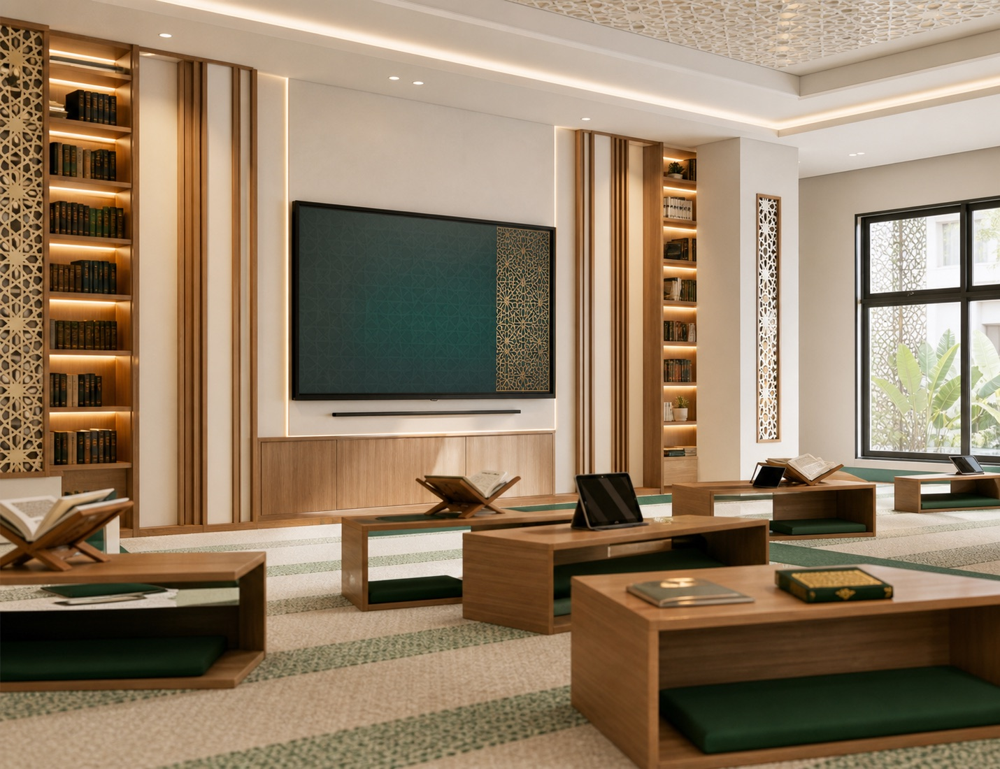

Tata Letak Ruang
Penataan meja, kursi, dan fasilitas laboratorium perlu mempertimbangkan alur aktivitas serta sirkulasi pengguna di dalam ruang.
Memuat Lab IPA
Lab IPA
Ciptakan ruang lab IPA yang aman, nyaman, dan fungsional untuk mendukung kegiatan praktikum dan pembelajaran sains. Dengan furniture, alat peraga, teknologi pembelajaran, serta fasilitas pendukung yang tepat, laboratorium dapat menjadi ruang belajar yang lebih interaktif dan optimal.
Konsultasikan Kebutuhan Anda
Tantangan
Laboratorium IPA memiliki kebutuhan yang berbeda dengan ruang kelas biasa. Furniture, peralatan praktikum, media pembelajaran, hingga fasilitas keamanan perlu ditempatkan secara tepat agar ruang dapat digunakan secara nyaman dan fungsional.
Penataan meja, kursi, dan fasilitas laboratorium perlu mempertimbangkan alur aktivitas serta sirkulasi pengguna di dalam ruang.
Pemilihan meja dan kursi perlu disesuaikan dengan aktivitas praktikum, jumlah siswa, serta karakteristik ruang laboratorium.
Peralatan praktikum dan media pembelajaran membutuhkan tempat penyimpanan yang tertata agar mudah ditemukan, digunakan, dan disimpan kembali.
Laboratorium perlu menyediakan fasilitas yang dapat membantu siswa memahami materi IPA melalui pengamatan, eksperimen, dan pembelajaran secara langsung.
Aktivitas praktikum melibatkan banyak pengguna dan berbagai peralatan sehingga aspek keamanan serta pengawasan ruang perlu diperhatikan.
Solusi Kami
Dukung kegiatan praktikum dan pembelajaran dengan furniture, alat peraga, serta fasilitas pendukung yang disesuaikan dengan kebutuhan laboratorium.

Layar interaktif yang mendukung penyampaian materi, presentasi, dan pembelajaran IPA secara lebih visual dan interaktif.
Lihat detailMeja yang mendukung kegiatan eksperimen dan praktikum siswa dengan area kerja yang nyaman dan fungsional.
Lihat detail
Lemari untuk menyimpan dan menampilkan peralatan serta media pembelajaran IPA agar lebih tertata dan mudah diakses.
Lihat detail
Fasilitas pendukung yang membantu memantau aktivitas dan kondisi ruang laboratorium.
Lihat detail
Kursi yang memberikan kenyamanan bagi siswa selama mengikuti kegiatan praktikum dan pembelajaran di laboratorium.
Lihat detail
Meja fungsional untuk mendukung berbagai aktivitas kerja dan kebutuhan kegiatan di dalam laboratorium.
Lihat detail
Media pembelajaran yang membantu siswa memahami konsep IPA melalui pengamatan dan praktik secara langsung.
Lihat detail01 — Interactive Flat Panel
Layar interaktif yang mendukung penyampaian materi, visualisasi konsep, dan interaksi antara guru dengan siswa selama pembelajaran IPA.
02 — Meja Praktikum
Meja praktikum menjadi area utama bagi siswa untuk melakukan pengamatan, percobaan, dan berbagai aktivitas eksperimen selama kegiatan pembelajaran IPA.
03 — Lemari Display
Lemari display membantu menyimpan sekaligus menampilkan berbagai peralatan, alat peraga, dan media pembelajaran yang digunakan di laboratorium.
04 — Meja Lab
Meja lab menyediakan area kerja yang fungsional untuk mendukung berbagai aktivitas di dalam laboratorium, baik kegiatan persiapan maupun pekerjaan pendukung praktikum.
05 — Kursi Lab
Kursi lab melengkapi area praktikum dengan tempat duduk yang nyaman untuk mendukung siswa selama mengikuti kegiatan pembelajaran dan eksperimen.
06 — Alat Peraga
Alat peraga membantu menghadirkan materi IPA dalam bentuk yang lebih konkret sehingga siswa dapat mengamati dan memahami konsep melalui pengalaman langsung.
07 — CCTV
CCTV menjadi fasilitas pendukung untuk membantu memantau aktivitas dan kondisi ruang laboratorium selama digunakan.
Portofolio
FAQ
Laboratorium IPA merupakan ruang pembelajaran yang digunakan untuk kegiatan pengamatan, eksperimen, dan praktikum berbagai materi sains.
Laboratorium IPA dapat memiliki area praktikum, area kerja, penyimpanan peralatan, media pembelajaran, serta fasilitas pendukung sesuai kebutuhan kegiatan laboratorium.
Kebutuhan dapat mencakup meja praktikum, meja lab, kursi lab, lemari display, alat peraga, CCTV, serta fasilitas pendukung lainnya.
Peralatan laboratorium IPA disesuaikan dengan jenis praktikum dan materi yang diajarkan, seperti alat ukur, alat pengamatan, alat percobaan, serta berbagai media pembelajaran.
Alat peraga membantu siswa memahami konsep sains melalui objek atau media yang dapat diamati secara langsung sehingga pembelajaran menjadi lebih konkret.
Keselamatan kerja meliputi mengikuti prosedur praktikum, menggunakan peralatan sesuai fungsinya, menjaga kebersihan ruang, serta menyimpan peralatan dengan tepat setelah digunakan.
Ya. Tata letak dan pemilihan furniture dapat disesuaikan dengan ukuran ruang, jumlah siswa, jenis aktivitas praktikum, dan kebutuhan fasilitas laboratorium.
Rancang ruang laboratorium dengan furniture, alat peraga, dan fasilitas pendukung yang sesuai dengan kebutuhan praktikum serta kondisi ruang Anda.